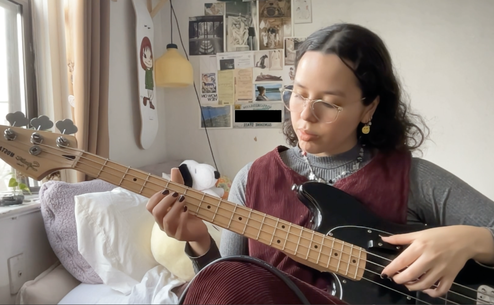

about

hi im claudia! i love making all kinds of different things on my computer such as websites, 3d graphics, drawings, video games, and blog posts!
to my students, im best known for being the world's coolest coding instructor, but one thing they don't know is that i love to read, study botany, and make music on my piano/guitar in my freetime.
Email me here: claudia.parlee@gmail.com